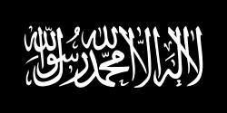

Pillars means that the wall, the five pillars of Islam means that those are the 5 walls of Islam.The Muslim have to obey these 5 walls so that he can go near to Allah.There are five pillars of Islam which are Listed below:

The Shahadah is the Muslim declaration of faith. The Shahadah means the person who have deep faith in Allah and his beloved Prophet Hazrat Muhammad(SAWW). The english translation of Shahadah is as follows:
The one who have to be the part of the Islamic religion he/she have to recite this Shahadah. If they do not recite this worse then they will not be called a Muslim. The Shahadah means that you have a complete faith on oneness of Allah and his last Prophet Hazrat Muhammad (SAWW). It means he has also faith in the day of Judgment. The man who have a complete faith in Shahadah he shall have complete faith on other Pillars of Islam.
Salah is the second pillar of Islam. It was the gift for the Muslims when there last Prophet Hazrat Muhammad(SAWW) went to Meiraj. The incidence of Meiraj will be discussed in the section where the details of Hazrat Muhammad(SAWW) will be discussed. These are offered five times a day. It is maditory for every Muslims to offer them. In Quran, Allah has asked there man to offer Salah almost 83 times. The purpose of Salah is to communicate with Allah. In Surah Bakarah verse no 238 Allah has said:
The five prayers are given below:
Fajar is the 1st prayer of the day. Which is prayed between the dawn break and the sunrise. In Fasting month the muslim started their fasting before offering this prayer. Their is total 4 rakat of Fajar prayer.
Zuhar is second prayer of the day. Zuhar prayed between zenith of noon and sun set. Their is total 12 rakat of Zuhar prayer.
Asar is the third prayer of the day. Asar is prayed between the time the sun is halfway between noon and sunset, and when the sun sets. It has total 8 rakat of the asar prayer.
Maghrib is fourth prayer of the day. Maghrib is prayed after sunset and before the beginning of night. Their is total 7 rakat of the Maghrib prayer.
Esha is last prayer of the day. Esha is prayed after the Maghrib (evening prayer) is completed and begins at that time. Their is total 17 rakat of Esha prayer.
Zakat is third pillar of Islam. It is maditory for every Muslim to give Zakat. Zakat means the "Giving to Charity" or "Giving to needy". Allah has asked the Muslim to give Zakat almost about 32 times in Quran. In Surah Bakarah Verse no 43 of Quran, Allah has said:
It means that Allah will asked about the Zakat at the day of Judgment also. That's why he has asked to pay the Zakat 32 times in the Quran.
Zakat
Zakat is the religious obligation for Muslims who have wealth above the certain amount, known as nisab. This nisab is equal to the amount of 2.5% of a Muslim total wealth and saving above the nisab. The person is maditory to give Zakat when he has wealth greater than or equal to the given nisab. If anyone have to see how he can calculate the wealth he can vesit the website, the link is given below after the paragraph.
Calculate Zakat
Sawm is the fourth pillar of Islam. It is very important for the Muslims. It is done in the month of Ramzan. It is the practice of abstaining usually from the food, drink, sexual activity that subsitute food and drink.
The sawm can be done in any month but the sawm in the holy month of Ramdan is maditory, so every person should perform the sawm. If he/she is child or old. The sawm is observed between the dawn and the sunset. In the Surah Bakarah of Quran aayat no 183 , Allah said:
Hajj is the fifth pillar of Islam. It is maditory for every person before death. It is done in the holy month of Dhul Hajja . It is done when we go to Makkah city of Saudia Arabia. In the Makkah there is home of Allah known as Kaabah.Hajj is a pilgrimage to Makkah, Saudi Arabia, that is a requirement for all adult Muslims.
More About Hajj